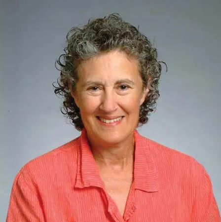

Barbara Jane Liskov es una prominente cientifica dela computación Estado Unidense nacida en Los Angeles, California en Estados Unidos el 7 de Noviembre de 1939.
Barabara estudio una licenciatura en matemáticas en la Universiadad de California, la cual que finalizo en el año 1961,
trabajó como programadora de computadoras en Massachusets, primero con el Mitr Corporation y luego en la Universidad de Harvard.
En 1963 regresá a california en donde se convirtio en asistente de John McCarthy y trabajo en sus projectos de inteligencia artificial en la Universidad de Standford.
Liskov obtuvo una maestría 1965 y un doctorado 1968 de Stanford, convirtiéndose en la primera mujer en obtener un doctorado en informática en los Estados Unidos.
Después de graduarse de Stanford, Liskov regresó a Mitre Corporation 1968-72 antes de unirse a la facultad del Instituto de Tecnología de Massachusetts (MIT), donde se convirtió en profesora NEC de ciencia e ingeniería de software 1986-97, profesora Ford of Engineering 1997-, y profesor del Instituto MIT 2008-.
La profesora Liskov pertenece a la Academia Nacional de Ingeniería (National Academy of Engineering, en inglés) de los Estados Unidos.
En 2004 ganó la Medalla John von Neumann por "su fundamental contribución a los lenguajes de programación, metodologías de programación y sistemas distribuidos".
En 2008 ganó el premio Turing por "su contribución a los fundamentos teóricos y prácticos en el diseño de lenguajes de programación y sistemas, especialmente relacionados con la abstracción de datos, tolerancia a fallos y computación distribuida".
En 2018 se la nombró doctora honoris causa por la UPM.